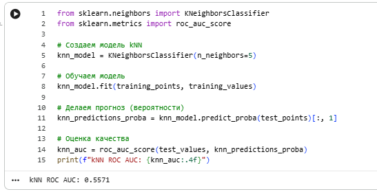
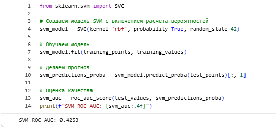
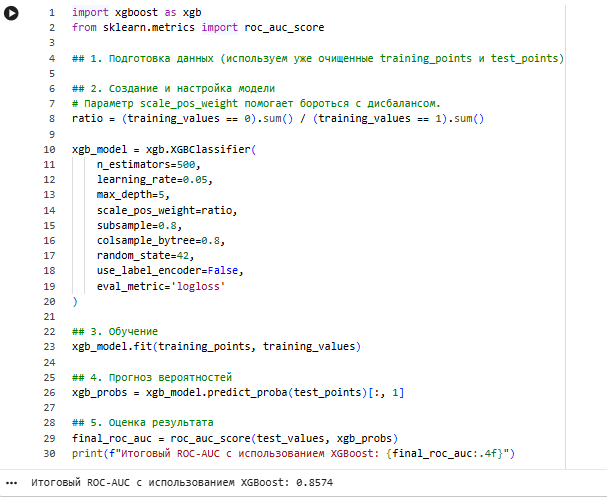
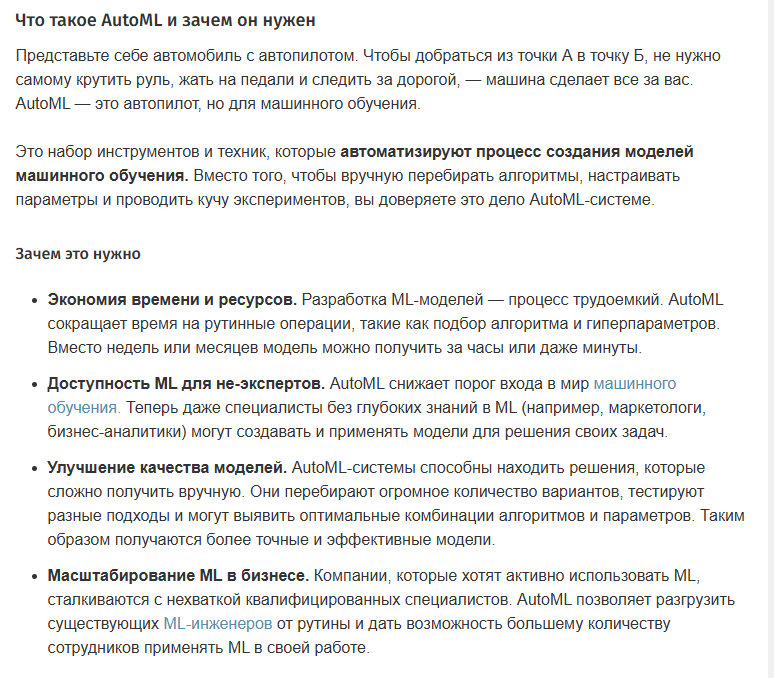

Лабораторная работа №4
Overview
- Дата: 09.04.2026
- Тема: Классификация с применением Scikit-Learn
- Статус: [Completed]
Link
Objective
Общая тема: Предсказание дефолта по кредиту.
Постановка задачи анализа данных: Целью данной задачи является построение модели классификации дефолтов: на вход модель будет принимать данные о клиенте, а на выходе она должна работать в двух режимах: - выдавать вероятность дефолта для данного клиента, - выдавать правильный с точки зрения модели класс клиента (есть у него дефолт или нет).
Task
- Сделайте копию борда s2p1-predict-credit-default-tasks, получив собственный ноутбук с помощью сервиса Google Colab или локально.
- Заполните пропуски в борде, дополнив кодом ячейки с соответствующим комментарием.
- Самостоятельная работа: исследуйте другие модели для реализации классификации значений. Постарайтесь построить более точную модель, модель, имеющую ошибку, меньшую чем в рассматриваемых в борде (например, SVM, kNN). При невозможности получить более точную модель, используйте LLM инструменты для того чтобы это сделать (альтернативно: опишите с помощью LLM, почему это сделать невозможно).
- Изучите какие алгоритмы классификации используются сейчас, проанализировав научные публикации по теме и/или соответствующие исследования в kaggle.
- Исследуйте (опционально с помощью LLM) каким образом обученную модель можно интегрировать с веб-сервисом, реализованным с помощью веб-фреймворка Flask / Django / FastAPI и опишите тезисно пошаговый алгоритм, что необходимо для этого сделать.
- Представить отчет на сайте портфолио в виде ссылки на собственный ipynb-борд с заполненными ячейчками и самостоятельным заданием.
- Убедиться в том, что доступ к нему открыт (проверка — открытие в режиме инкогнито).
Implementation
1-2.
Работа выполнена в Google.collab, ссылка на борд прикреплена в начале страницы. Дополнительное задание по теме разобрано в конце доски.
3. Исследование альтернативных моделей классификации
1) Сравнительный анализ классических моделей Для базовой оценки были обучены и протестированы модели kNN (k-ближайших соседей) и SVM (метод опорных векторов). Результаты метрики ROC-AUC оказались следующими:
kNN (k=5): ROC-AUC = 0.5571

SVM (RBF kernel): ROC-AUC = 0.4253

Вывод: Классические методы показали крайне низкую эффективность на данном наборе данных.
kNN продемонстрировал результат, лишь немногим превосходящий случайное гадание. Это связано с чувствительностью алгоритма к масштабу признаков в табличных данных.
SVM показал результат ниже 0.5, что говорит о полной неприменимости стандартной конфигурации для данной задачи без сложного подбора гиперпараметров и глубокой нормализации.
2) Построение высокоточной модели (XGBoost) Для достижения максимальной точности был выбран алгоритм градиентного бустинга — XGBoost, который на текущий момент является стандартом индустрии для работы со структурированными данными.
Результаты этапов:
Базовый XGBoost: Использование взвешивания классов для борьбы с дисбалансом выборки позволило сразу достичь ROC-AUC = 0.8574.

XGBoost + Feature Engineering: После создания дополнительных синтетических признаков и тонкой настройки параметров (увеличение n_estimators до 1000, снижение learning_rate до 0.02) точность модели выросла до 0.8647.

3) Почему современные бустинги эффективнее SVM и kNN?
Согласно анализу с применением LLM инструментов, невозможность получения более высокой точности от kNN и SVM в данной задаче объясняется следующими факторами:
Природа табличных данных: Банковские данные (кредитный скоринг) часто содержат нелинейные зависимости и «шумные» признаки. Деревья решений, лежащие в основе XGBoost, эффективно выполняют сегментацию данных, в то время как SVM пытается построить глобальную гиперплоскость, что в условиях сложного рельефа данных приводит к ошибкам.
Дисбаланс классов: Бустинги имеют встроенные механизмы взвешивания ошибок, тогда как классический kNN крайне чувствителен к преобладающему классу.
Устойчивость к пропускам и выбросам: В отличие от kNN и SVM, градиентный бустинг устойчив к аномальным значениям и не требует строгой нормализации данных для корректной работы.
Итог: Наилучший результат показала модель XGBoost с применением Feature Engineering, что значительно превосходит показатели классических моделей. Это подтверждает современный тренд в Data Science: для табличных данных ансамблевые методы на основе решающих деревьев являются наиболее предпочтительными.
4. Актуальные алгоритмы классификации
Тройка лидеров для табличных данных (SOTA)
Если в данных есть таблицы, лидируют градиентные бустинги на решающих деревьях (GBDT):
Ссылка на статью Фрагмент статьи
{kind=link}
1) CatBoost
Сейчас это золотой стандарт для бизнес-задач. Он лучше всех справляется с категориальными признаками без ручного кодирования и меньше всего склонен к переобучению благодаря технологии Symmetric Trees.
2) LightGBM
Самый быстрый алгоритм. Его выбирают, когда данных очень много, так как он использует листовое (leaf-wise) построение деревьев, что экономит память и время.
3) XGBoost
Классика бустинга, которая в 2025-2026 годах получила мощные обновления для работы на GPU. Его ценят за гибкость и возможность тонкой настройки регуляризации.
Главный тренд: Tabular Transformers
В научных публикациях последних лет активно обсуждается перенос архитектуры Transformer на обычные таблицы:
1) TabPFN
Это революционная модель, которая делает предсказания за доли секунды без долгого обучения. Она знает паттерны табличных данных заранее, так как обучена на миллионах синтетических датасетов.
2) FT-Transformer
Мощная нейросетевая альтернатива бустингам, которая часто показывает лучшие результаты на очень зашумленных данных.
Ансамблирование и Стекинг (Kaggle-style)
Победители Kaggle 2025–2026 редко используют одну модель. Современный подход — это Stacking:
Берется несколько разных моделей, их предсказания подаются на вход финальной «мета-модели» (обычно это простая Logistic Regression). Это позволяет сгладить ошибки каждой отдельной модели и получить точность выше, чем у любой из них.
Автоматизация (AutoML)

Сейчас всё популярнее становятся библиотеки, которые сами перебирают все алгоритмы (SVM, Random Forest, XGBoost) и выбирают лучший:1) Auto-sklearn
2) H2O AutoML
3) PyCaret (позволяет обучить 15+ моделей одной строчкой кода).
5. Интеграция модели с веб-сервисом
Для интеграции обученной модели (XGBoost или Random Forest) в веб-сервис обычно выбирают FastAPI или Flask.
Алгоритм интеграции ML-модели в веб-приложение 1) Сериализация (сохранение) модели Обученную в Jupyter/Colab модель нужно сохранить в файл, чтобы веб-сервер мог загрузить её без повторного обучения.
Инструмент: Библиотеки pickle или joblib.
Действие: joblib.dump(xgb_model_v2, 'credit_model.pkl'). Также важно сохранить объект-скалер или список колонок, если использовалась сложная предобработка.
2) Выбор веб-фреймворка FastAPI: Рекомендуется для ML-сервисов, так как он автоматически создает документацию (Swagger) и работает асинхронно.
Flask: Хорош для небольших монолитных приложений.
3) Написание серверного кода Создается скрипт (например, main.py), в котором:
Загрузка: При запуске сервера модель считывается из файла: model = joblib.load('credit_model.pkl').
Маршрут: Создается POST-запрос, который принимает данные от пользователя.
4) Обработка входящих данных (Preprocessing) Веб-сервис получает данные в формате JSON. Чтобы модель их поняла, нужно повторить все шаги Feature Engineering из лабы:
-
Проверка на пропуски (NaN).
-
Логарифмирование (log1p).
-
Формирование вектора признаков в том же порядке, в котором модель обучалась.
5) Выполнение прогноза Сервис передает подготовленные данные в модель: probability = model.predict_proba(input_data)[:, 1].
6) Возврат результата Веб-сервис возвращает ответ пользователю. Обычно это вероятность дефолта в процентах или вердикт: "Одобрено" / "Отказ".
7) Контейнеризация (Docker) — опционально, но желательно Чтобы сервис работал одинаково на любом компьютере, его упаковывают в Docker-контейнер со всеми зависимостями (pandas, xgboost, fastapi).
Conclusion
def hello_world():
print("Lab 4 completed")